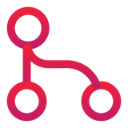
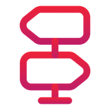
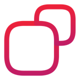

Cheat sheet IA · sous le capot · 1/2
Ce qui se passe dans le modèle
Le modèle prédit, le harness agit, la gateway gouverne.
Six notions
LLM le moteur : prédit le token suivant
SLM le petit moteur : 1 à ~15 Md de paramètres
Agent modèle + outils + boucle + objectif
Harness tout le code qui n'est pas le modèle
Orchestrateur coordonne plusieurs agents
SDD la spec écrite, source de vérité

La pile complèteMéthode SDD : spec → plan → tâches
Orchestrateur : découpe, distribue, agrège
Agents = harness + appel au modèle ⇄ outils, MCP
Gateway + guardrails : auth, routage, quotas, logs
Fournisseurs : cloud, hyperscaler, souverain, SLM local
Les outils sont exécutés par le harness, jamais par le modèle.

Chatbot, workflow ou agent ?| Qui décide de l'étape suivante ? | Coût |
|---|---|
| Chatbot : l'humain | prévisible |
| Workflow : le code, chemin écrit à l'avance | prévisible |
| Agent : le modèle, à chaque tour | variable |
Commencer par la solution la plus simple qui marche.
 Le trajet d'une phrase
Le trajet d'une phrase
Texte
›
Tokens
›
Embeddings
›
Couches ×N
›
Logits
›
Tirage
- Un token à la fois : 500 tokens de réponse = 500 passes.
- Attention : les tokens se lisent entre eux ; MLP : les connaissances.
- Température basse = favori ; top-p = tirage parmi les plus probables.
- Il produit du plausible, pas du vrai.
 Contexte et KV cache
Contexte et KV cache
- Sans état : à chaque tour, le harness renvoie tout le contexte.
- Plus long ≠ mieux : lost in the middle, context rot.
Prefilllit le prompt en parallèle → temps avant le 1er token
Decodeun token par passe, réutilise le cache → tokens/s
Prompt caching : préfixe déjà vu facturé jusqu'à ~90 % moins cher. Gardez le début stable.

Rendre un modèle plus léger- Quantification : un 8B passe de 16 Go (FP16) à ~5 Go (4 bits).
- Distillation : un petit élève imite un grand professeur.
- MoE : DeepSeek-V3, 671 Md au total, 37 Md actifs par token.
 6 réflexes de développeur
6 réflexes de développeur
- Compter en tokens : coût, limites, latence.
- Demander des sorties courtes et des diffs.
- Mettre l'info utile dans le contexte.
- Garder le préfixe stable en session.
- Vérifier : tests, typage, revue.
- SLM pour trier, LLM pour raisonner.